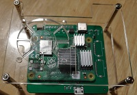

NOW
I am currently in a coding bootcamp at Coding Temple!
It's time to get back into the kind of technology that I have previously been familiar with and enjoy!
Also, hoping to return to China or Japan when I can. Truly enjoyed Fukuoka, and loved the year I spent earning my MBA in Shanghai!

BACK WHEN
I have worked in many jobs and worn many hats over the years.
Most recently, I have been a co-founder of a startup that makes HD Cameras for use in conjunction with autonomous and ADAS vehicles.
Concurrently, I have been the owner and proprietor of Getter Transportation LLC, which provides transportation services in the gig economy.